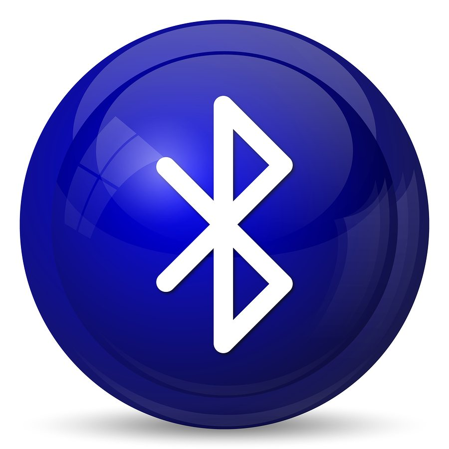

Technology of the 2000s
The Social and Mobile Revolution
The Smartphone
The iPhone merged phone, music player, and web browser. Combined with the App Store, it created an entirely new software economy.

Cloud Computing
AWS and other cloud platforms allowed businesses and developers to rent computing power on-demand, without buying physical servers.

Social Media
Facebook, Twitter, and YouTube transformed the Internet from a content-consumption platform into a social space where everyone could publish.

Bluetooth
Bluetooth became standard in phones and laptops, enabling wireless headphones, keyboards, and device pairing without cables.